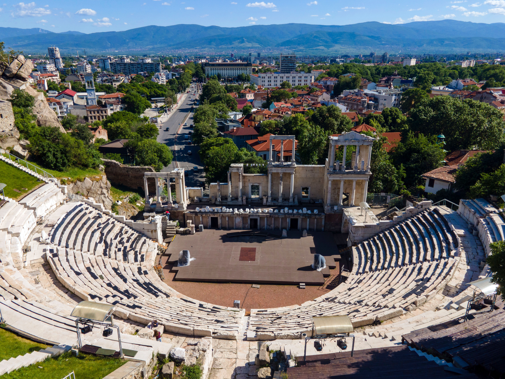

Plovdiv, Bulgaria
Plovdiv is one of the oldest continuously inhabited cities in Europe, located in Bulgaria. It is famous for its ancient Roman theatre, built during the Roman Empire. The theatre is one of the city's most important archaeological landmarks and is still used for cultural performances.
